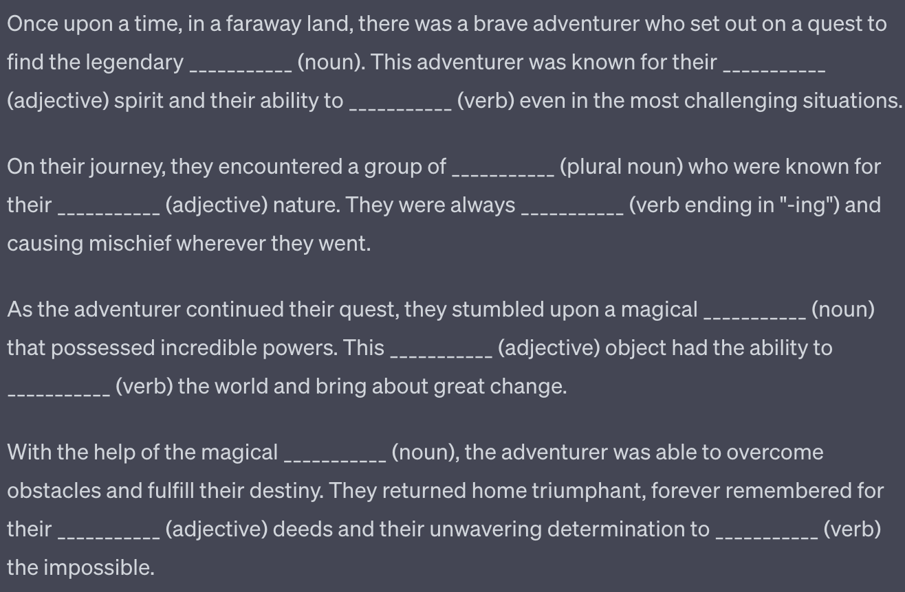

This game is a simply reconstruction of the popular MadLibs game created by Roger Price and Leonard Stern. Using the C++ language, the user can create their own stories with 3 different templates. Please note ChatGPT was used to generate the random stories but not for the coding logic.
